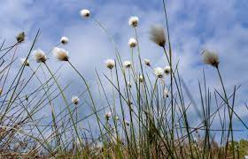

Clara Heritage Society
Natural Page
This website uses the Dark mode or Light mode option

Dark Mode is OFF
A Slideshow of Clara's Natural Heritage
Boardwalk
Clara Boardwalk in Autumn.
Tonys Hill
A view from Tony's Hill

Walking Trail
Clara Heritage Society Guided Trail

Boardwalk
Guided Trail through Clara Bog

Boardwalk
Clara Bog
Clara Bog Nature Reserve
Clara Bog is the finest remaining example of a raised bog in Ireland today. Raised bogs once covered 310,000 hectares in Ireland but today just 7% remains intact. This forms over 50% of the remaining area of uncut raised bog in North West Europe.
Clara Bog Nature Reserve is 464 hectares of raised bog with evident lag and soak systems. The nature reserve is home to many protected wildlife species. The installation of a 1km-looped timber boardwalk with interpretive panels at Clara Bog has provided for local recreation and tourism.
The site is protected under a number of national and international designations including National Nature Reserve, a Special Area of Conservation, Ramsar Wetland Site, Natura 2000 site, and Natural Heritage Area. Clara Bog Nature Reserve and Visitor Centre are managed by National Parks and Wildlife Service of the Department of Arts, Heritage and the Gaeltacht.
The award-winning Clara Bog Visitor Centre offers visitors a fascinating insight into the bog. The interactive interpretive area covers themes such as: the development of peatlands; biodiversity of raised bogs; the history and archaeology associated with raised bogs; and some unique facts about Clara Bog.
The multi-purpose Audio Visual room can accommodate groups of 50 and is available for meetings, talks, workshops and courses to local/environmental groups. The Visitor Centre offers walks, talks, workshops and other educational activities for adults and children.
Open since 2010 the Visitor Centre is co-located with Clara Library, on the Ballycumber Road. We are 1.5 km from the nature reserve which is located on the Clara-Rahan Road. Visitors can park at the Centre and walk to the nature reserve, alternatively there is an area for cars at the nature reserve.
The centre is just a 5 minute walk from Clara train station and just 10 minutes from the M6 motorway. Please note that opening 'Rock Salt', sans-serifat the Centre may change, so it is advisable to check ahead of your visit.
The nature reserve boardwalk trail is open and accessible all year round.
Plant Life
The raised bog flora is very unique. The waterlogged and acidic peat is contrary to what most plants usually thrive in yet Clara Bog is covered in plants.
That is because many of them are specially adapted to growing in adverse conditions.
 mossSphagnum moss is without doubt the most important plant on the bog. It is also called the bog builder as it is the main peat forming plant of raised bogs. It has amazing absorbency qualities and can hold up to 20 'Rock Salt', sans-serifits own weight in water. This accounts for the high water content of the bog, typically 95% water.
mossSphagnum moss is without doubt the most important plant on the bog. It is also called the bog builder as it is the main peat forming plant of raised bogs. It has amazing absorbency qualities and can hold up to 20 'Rock Salt', sans-serifits own weight in water. This accounts for the high water content of the bog, typically 95% water.
It is a curious little plant. It has no roots and lives in acid water with very few nutrients. It grows by absorbing nutrients from the moisture droplets in the air. The top part of the moss is living while the bottom part is dead.
The dead part helps the living part by storing water in its cells to help prevent it from drying out during drier spells. There are about 24 species of sphagnum moss in Ireland; 13 of these grow in Clara Bog. They are like living carpet on the bog’s surface and are varied in colour. They occupy different moisture zones on the bog.
In the bog pools you will find the bright green Sphagnum cuspidatum, while on the bog’s surface the crimson Sphagnum magellanicum and ochre Sphagnum papillosum can form a wet mosaic carpet. The ginger brown Sphagnum austinii forms tightly packed hummocks raising the water table above the bog’s surface. Besides Sphagnum there are many other moss types present in Clara Bog.
A noticeable one, Leucobryum glaucum, forms tightly packed green “pincushions” that can grow as high as 50cm. Ling Heather can often be seen growing on the pincushions. Clara Bog is also the only known Irish site for Narrow Cruet-moss (Tetraplodon angustatus).
Other interesting plants on the bog include the collection of carnivorous plants. Sundews, butterworts and bladderworts all trap and digest their insect prey.
Attracted by the glistening and sweet-smelling “tentacles” of the sundew, a fly lands. The ultra-sensitive stalks bend inwards immediately, trapping the insect with their sticky glue. The creature struggles to free itself, only enmeshing itself further. In less than 15 minutes it is dead from asphyxiation or exhaustion.
Then enzymes in the plant get to work, digesting the creature to create a nutrient soup for the plant to devour. Two types of sundew grow on Clara Bog; round-leaved sundew (Drosera rotundifolia) can be found in drier areas where there are pockets of bare peat and the larger Great Sundew (Drosera angelica) can be seen growing in wetter areas such as bog pools and remnant drains.
The purple flower on the slender stem of the Butterwort may look attractive, but its leaves are deadly for insects. They are attracted by the wet appearance of the sticky mucus secreted by the leaves – once they land; there is no escape… the leaf edges can curl over to pour more of this “glue” on to the creature till it quickly expires.
BladderwortThe yellow flowers of Bladderwort can be seen above the bog pools in summer. The feathery submerged leaves have many tiny bladders. These are used to trap insects with a unique trap door and trigger hair mechanism. When the prey touches off the trigger hair, the trap door opens and the insect get sucked into the bladder. The door closes then the unfortunate creature becomes trapped and eventually digested by the plant.
 Bog cotton, perhaps the quintessential plant of bogs, can give the distant appearance of a snow covered landscape even on a sunny day. Two types of bog cotton grow on Clara Bog. The first to appear is Hare’s-tail Cottongrass (Eriphorum vaginatum) with its single fluffy head followed by Common Cottongrass (Eriophorum angustifolium) with its multi-cottony flower heads.
Heather, another classical plant of bogs, begins to swathe the drier areas in a deep pink colour from mid-summer onwards. The more dominant and bushier Ling Heather (Calluna vulgaris) can provide food for hungry birds and insects in the form of nectar, leaves and seeds. The more slender Cross-leaved Heath (Erica tetralix) weaves it way amongst the Ling Heather and has beautiful pink to magenta bell- shaped flowers.

Few counties can have a small bog plant on their coat of arms, but County Offaly is proud of the Bog Rosemary. It is easily distinguished by its leathery rolled leaf edges and its delicate pink flowers and usually grows with Sphagnum and some'Rock Salt', sans-serifCranberry. Bog Rosemary features as the emblem for the Irish Peat Society (IPS). Due to the destruction of lowland raised bogs to which it is restricted, this small member of the heather family is relatively local in its distribution in Ireland.
Heath-spotted orchid (Dactylorhiza maculata) and Common-spotted Orchid (Dactylorhiza fuchsii) are plentiful in the drier areas and they often hybridize. The Lesser-butterfly Orchid (Platanthera bifolia) with its almost luminous flower spike colonise similar areas. Marsh Helleborine (Epicactus palustris) and Common Twayblade (Listera ovata) are found on either side of the boardwalk before it ascends onto high bog.
Several bog-loving berry plants thrive on top of the Sphagnum mosses. Cranberry stems wind their way along the top of wet Sphagnum producing red berries that are edible. These can be seen from the board walk. Bilberries (Vaccinium myrtillus) are plentiful in the Bog woodland and provide food for passing mammals such as Fallow Deer. The Bog Woodland is visible from the board walk on the high bank looking in south westerly direction. Crowberry (Empetrum nigrum) also occurs close to this wooded area.
Other plants that can be seen on Clara Bog include Deergrass (Trichophorum germanicum), White Beak-Sedge (Rhynchospora alba), Bogbean (Menyanthes trifoliata), Bog Asphodel (Narthecium ossifragum), Bog-myrtle (Myrica gale), Meadow or Bog Thistle (Cirsium dissectum), Purple Moor-grass (Molinia caerulea), Carnation Sedge (Carex panicea), and Heath Milkwort (Polygala serpyllifolia).
Clara Bog is one of the best remaining examples of a relatively intact raised bog in Western Europe. It has been said that you can experience ten thousand years of history in the ten square kilometres that accommodate Clara Bog and its surroundings. Clara Bog contains fine examples of hummocks, hollows, lawns, pools and flushes; all classic components of a raised bog. At Clara, a special feature are the soak systems, open water areas and very wet spots, where nutrients are more available and which therefore support a more diverse plant life than in the surrounding bog. These areas are some'Rock Salt', sans-seriftree-lined. Two such areas are Lough Roe and Shanley’s Lough.
Summer Walking trails
Clara's Hidden Gem
The once meticulously maintained River Brosna, at Clara Town, in Co. Offaly.
The legacy of an industrial past combined with natural beauty.
A National Treasure, yearning to be restored.
YouTube